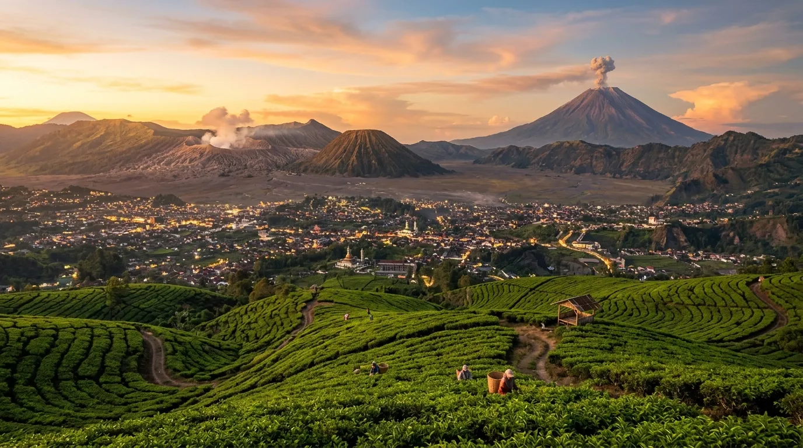
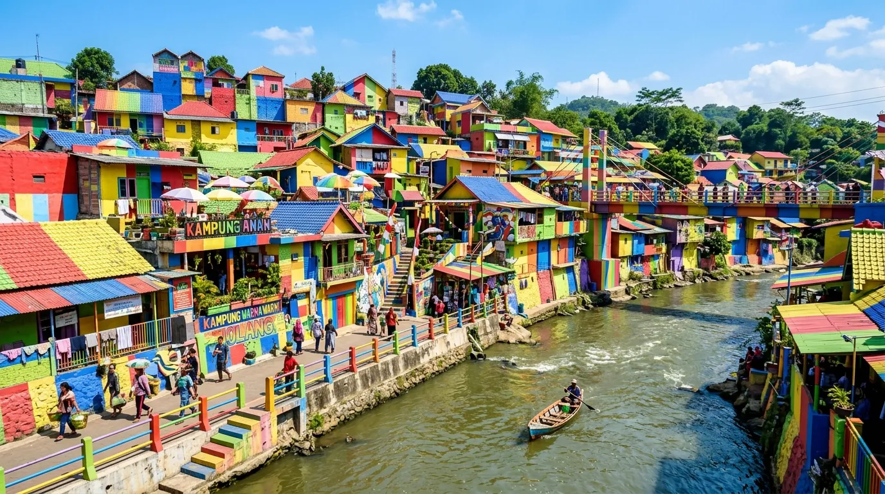

- Kenapa Malang Jadi Destinasi Favorit?
- 1. Wisata Alam & Pegunungan (15 Destinasi)
- 2. Wisata Pantai Malang Selatan (15 Destinasi)
- 3. Wisata Keluarga & Taman Bermain (15 Destinasi)
- 4. Wisata Edukasi & Museum (10 Destinasi)
- 5. Wisata Sejarah & Heritage (10 Destinasi)
- 6. Wisata Kekinian & Instagramable (15 Destinasi)
- 7. Wisata Religi (5 Destinasi)
- 8. Wisata Kuliner Terkait Destinasi (10 Rekomendasi)
- 9. Desa Wisata & Agrowisata (5 Destinasi)
- Tips Berkunjung ke Wisata Malang
- FAQ Seputar Wisata Malang
Malang selalu jadi jawaban favorit ketika orang mencari wisata Malang yang lengkap: gunung, pantai, taman bermain, sampai kampung heritage ada semua di sini. Udaranya sejuk, jaraknya relatif dekat dari Surabaya, dan hampir setiap sudut kota maupun kabupatennya punya spot menarik untuk dikunjungi. Tak heran kalau pencarian tempat wisata Malang dan wisata Malang terbaru selalu ramai setiap musim liburan tiba.
Artikel ini merangkum 100 tempat wisata di Malang Raya (Kota Malang, Kabupaten Malang, dan Kota Batu) yang dikelompokkan berdasarkan kategori, supaya kamu lebih mudah menyusun itinerary sesuai minat: alam, pantai, wisata keluarga, edukasi, sejarah, hingga spot kekinian.
Kenapa Malang Jadi Destinasi Favorit?
Malang menggabungkan tiga hal yang jarang ditemukan di satu wilayah sekaligus: pegunungan sejuk (Batu dan sekitarnya), pantai eksotis di selatan, serta kota tua bergaya kolonial yang masih terawat. Ditambah lagi, terus bermunculan destinasi baru setiap tahun, sehingga daftar wisata Malang terbaru selalu berubah dan layak dipantau sebelum liburan.
Malang menggabungkan tiga hal yang jarang ditemukan di satu wilayah sekaligus: pegunungan sejuk, pantai eksotis di selatan, serta kota tua bergaya kolonial yang masih terawat.
1. Wisata Alam & Pegunungan (15 Destinasi)
- Gunung Bromo – ikon utama sunrise terbaik di Jawa Timur
- Gunung Semeru (jalur pendakian via Ranu Pani)
- Coban Rondo – air terjun klasik favorit keluarga
- Coban Pelangi
- Coban Talun
- Coban Rais
- Coban Sriti
- Gunung Panderman – pendakian singkat cocok pemula
- Gunung Kawi
- Bukit Semar Ngantang
- Bukit Sanjaya
- Paralayang Gunung Banyak
- Kebun Teh Wonosari
- Bukit Klangon
- Lembah Indah Malang (LIM)
2. Wisata Pantai Malang Selatan (15 Destinasi)
- Pantai Balekambang – pura di atas karang mirip Tanah Lot
- Pantai Sendang Biru
- Pantai Tiga Warna
- Pantai Clungup
- Pantai Goa China
- Pantai Ngliyep
- Pantai Kondang Merak
- Pantai Bajul Mati
- Pantai Jonggring Saloko
- Pantai Watu Leter
- Pantai Gatra
- Pantai Ngantep
- Pantai Teluk Asmara – dijuluki "Raja Ampat-nya Malang"
- Pantai Batu Bengkung
- Pantai Modangan
3. Wisata Keluarga & Taman Bermain (15 Destinasi)
- Jatim Park 1
- Jatim Park 2 (Batu Secret Zoo & Museum Satwa)
- Jatim Park 3
- Museum Angkut
- Batu Night Spectacular (BNS)
- Malang Night Paradise
- Eco Green Park
- Dino Park
- Predator Fun Park
- Selecta – taman rekreasi dan pemandian
- Songgoriti
- Kusuma Agrowisata
- Cimory Dairyland Malang
- Alun-Alun Batu
- Coban Talun Adventure Park

4. Wisata Edukasi & Museum (10 Destinasi)
- Museum Satwa
- Museum Angkut
- Museum Musik Indonesia
- Museum Brawijaya
- Museum Bagong Adventure
- Museum Zoologi Frater Vianney
- Rumah Sejarah Kayutangan
- Legend Star Wax Museum
- Museum Malang Tempo Doeloe
- Planetarium Kota Batu
5. Wisata Sejarah & Heritage (10 Destinasi)
- Kayutangan Heritage
- Kota Lama Malang
- Balai Kota Malang
- Candi Singosari
- Candi Badut
- Candi Jago
- Candi Kidal
- Klenteng Eng An Kiong
- Gereja Kayutangan (Gereja Hati Kudus Yesus)
- Stasiun Malang Kota Baru
6. Wisata Kekinian & Instagramable (15 Destinasi)
- Kampung Warna Warni Jodipan
- Kampung Tridi
- Santerra Grand Garden
- Alun-Alun Tugu Malang
- Omah Kayu
- Bedengan Malang
- Rabbit Town
- The Lodge Maribaya-style spot di Batu (Coban Talun)
- D'Alara Waterpark
- Petik Apel Kusuma Agrowisata
- Amazing Art World
- Milenial Glow Garden
- Bukit Sanjaya Ngantang
- Taman Krida Budaya
- Alun-Alun Kota Batu
7. Wisata Religi (5 Destinasi)
- Padepokan Gunung Kawi
- Pura Poten Bromo
- Klenteng Eng An Kiong
- Gereja Kayutangan
- Masjid Jami' Malang
8. Wisata Kuliner Terkait Destinasi (10 Rekomendasi)
- Kawasan kuliner Alun-Alun Malang
- Sentra bakso Malang (bakso Presiden, bakso Bakar Pahlawan Trip)
- Kedai kopi kawasan Kayutangan
- Angkringan Malang
- Rawon & Rujak Cingur khas Malang
- Cafe kebun kawasan Batu
- Sate Kelinci di kawasan Selecta
- Apel petik langsung Kusuma Agrowisata
- Susu segar & olahan Cimory Dairyland
- Pasar Wisata Splash Waterpark Batu
9. Desa Wisata & Agrowisata (5 Destinasi)
- Desa Wisata Pujon Kidul
- Desa Wisata Bumiaji
- Desa Wisata Gubugklakah
- Agrowisata Petik Jeruk Selorejo
- Kampung Wisata Tulungrejo
Tips Berkunjung ke Wisata Malang
- Waktu terbaik: pagi hari (05.00–09.00) untuk wisata gunung, dan sore hari untuk wisata pantai agar tidak terlalu panas.
- Transportasi: sewa mobil atau motor lebih fleksibel karena jarak antar destinasi cukup jauh, terutama ke area pantai selatan.
- Cek update terbaru: karena banyak destinasi wisata Malang terbaru yang terus berkembang, sebaiknya cek jam operasional dan harga tiket terbaru sebelum berangkat.
- Bawa jaket: kawasan Batu dan sekitar Bromo bisa sangat dingin, terutama malam dan dini hari.
- Rencanakan per kawasan: kelompokkan kunjungan berdasarkan zona (Batu, Malang Selatan, Kota Malang) agar perjalanan lebih efisien.
Dengan 100 destinasi yang tersebar di seluruh Malang Raya, kota ini membuktikan diri sebagai salah satu tujuan wisata terlengkap di Jawa Timur. Tinggal sesuaikan dengan minat, waktu, dan budget kamu!
.webp)